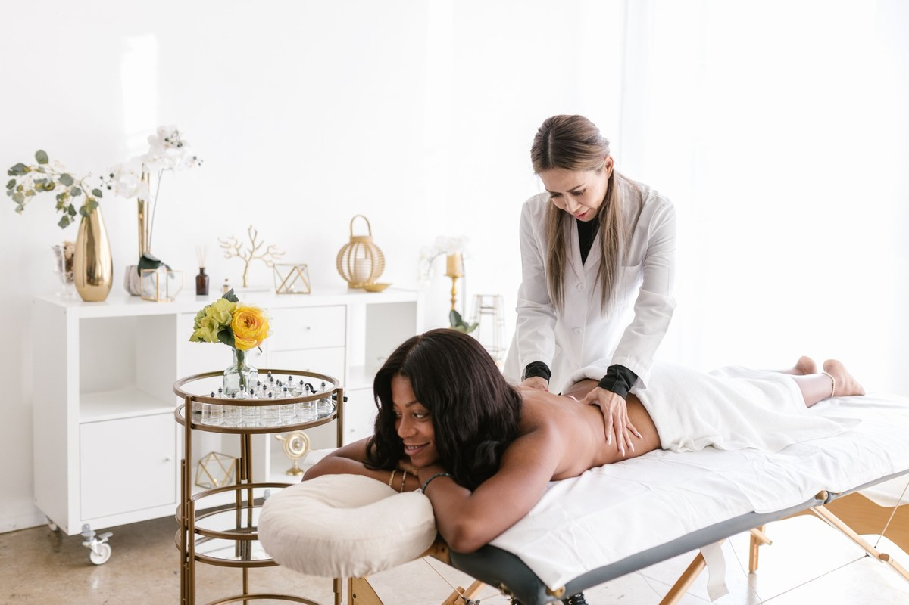
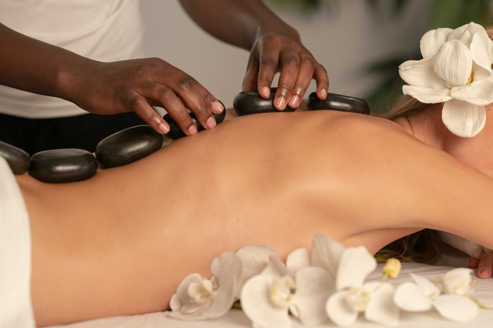

Nursing & Care
Inspired by 21 Years of Nursing
The heart of Alvin's Haven comes from a family legacy of caring for people with patience, dignity and compassion.
Alvin's Haven was opened in 2021 and named in honour of my mother, a nurse who has dedicated 21 years to caring for people.
Her example inspired us to create a welcoming wellness and recovery space where people can find quality support without feeling that professional care is out of reach.
The centre is designed around everyday wellbeing, including support for people dealing with back pain, muscle tension, mobility challenges, stress and the need for a peaceful place to recover.

To provide accessible, professional wellness treatments that support physical recovery, emotional wellbeing, and long-term health for every individual in our community.
To become Gauteng's most trusted wellness centre, recognised for exceptional care, innovative recovery programmes, and a commitment to helping people live healthier, more balanced lives.
We welcome individuals of all ages seeking:
Whether you are a busy professional, a student, an athlete recovering from injury, or someone seeking a peaceful escape, Alvin's Haven is here for you.
A warm, professional team concept for the Alvin's Haven academic website.
The heart of Alvin's Haven comes from a family legacy of caring for people with patience, dignity and compassion.

Our concept focuses on making visitors feel comfortable while supporting everyday wellness, recovery and mobility.
Services are presented with an emphasis on affordability, comfort and a positive experience for the community.
These staff images and profiles are representative website content for the WEDE5020 academic prototype and do not identify real Alvin's Haven employees.